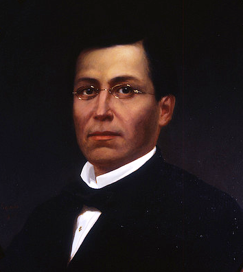
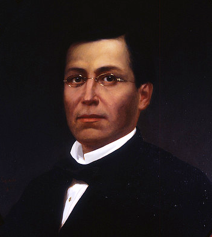

Batalla de Puebla
Batalla de Puebla
La Batalla de Puebla tuvo lugar el 5 de mayo de 1862 cerca de la ciudad de Puebla (México), en el ataque y defensa del Fuerte de Loreto y del Fuerte de Guadalupe, durante la invasión francesa a México. En México se conmemora con el “Cinco de Mayo”. Fue una importante victoria mexicana con resonancia global, pues venció al ejército más experimentado y reputado de la época. En 1861, después de la larga lucha conocida como la “Guerra de Tres años”, México estaba en pésimas condiciones económicas y políticas. Tenía una enorme deuda con España, Francia e Inglaterra . Por ello Benito Juárez, quien recientemente había sido eleguido Presidente de México, declaró una moratoria que duraría dos años, o sea que acordó no pagarles durante este tiempo para que México pudiera reponerse. Esta decisión, no gustó a las naciones extranjeras y así los franceses, españoles e ingleses vinieron a México con el fin de cobrarse a la fuerza la deuda. En octubre de 1861, España, Inglaterra y Francia se reunieron y decidieron invadir el país, para ello formaron una Alianza Militar Tripartita. Pero, si bien el motivo de la invasión era exigir el pago de las deudas, los países extranjeros tenían otros intereses particulares: - España quería recuperar el dominio de México, porque había perdido sus colonias en América. -Inglaterra, contaba con un gran poder industrial y financiero y su imperio se había extendido por Asia y África, pero también querían extenderlo en América. - El imperio Francés se había desarrollado mucho en Europa y quería abrir nuevos mercados y establecer ricas colonias mineras. Así fue, con una idea común, pero con distintos fines, los ejércitos de los tres países aliados llegaron a México. Juárez les pidió que llegaran a un arreglo amistoso. Como resultado de las negociaciones elaboraron un documento llamado los Acuerdos o Tratados de Soledad y aceptaron la propuesta de Juárez sobre el pago de la deuda.En esta reunión también reconocieron el gobierno de Juárez; declararon que respetarían la integridad y la independencia nacional. España e Inglaterra cumplieron con los acuerdos, pero Francia no lo hizo y mandó tropas para invadir el país, por lo que se rompió la alianza. Las tropas francesas estaban muy bien equipadas y eran mucho más grandes que el ejercito Mexicano; por lo que Benito Juárez convocó a toda la población a que luchara, así se formó un ejército de aproximadamente 4800 hombres. Fue el 5 de Mayo de 1862 cuando el General Laurencez al mando de las tropas francesas ordenó el asalto a los fuertes de Loreto y Guadalupe, que defendían la ciudad de Puebla al mando del General Ignacio Zaragoza; el ejercito invasor que fue rechazado con grandes pérdidas al intentar repetidas veces tomar las fortificaciones, al final tuvieron que abandonar el campo y retirarse vencidos y perseguidos por la caballería mexicana. Finalmente, el ejército francés fue derrotado y el general Ignacio Zaragoza, mandó un mensaje telegráfico al presidente Juárez, que decía “Las armas nacionales se han cubierto de gloria” La Batalla de Puebla simboliza el espíritu de lucha y el amor a la independencia que caracteriza el pueblo mexicano. Actualmente éste día se celebra realizando ceremonias cívicas, en muchas ciudades se realizan desfiles. y también es costumbre representar la lucha de ése día con gente personificada tanto de mexicanos como franceses.
Lo que no sabias..
La batalla del cinco de mayo nos recuerda que alguna vez, hace ya muchos años, fuimos capaces de, aunque sólo fuera por una vez, ganarle al más fuerte. La que sigue es una historia, digna del cine, la historia de unos indígenas que, con coraje y valor lucharon contra el, entonces ejército más poderoso del mundo, y lo venció. De esta historia se desprenden nombres como los de Negrete, Díaz, Zaragoza, y muchos otros, que hoy son ídolos nacionales.
Personajes importantes de la Batalla de puebla
Benito Juarez
Juárez, quien en sus primeros años fue seminarista al ver que éstos gozaban de buena educación, siendo presidente decidió separar a la Iglesia del Estado, decretando en 1859 la primera de las normas de lo que sería denominado la Reforma: La Ley de Nacionalización de los Bienes Eclesiásticos. La Guerra de Reforma, conocida también como Guerra de los Tres Años, enfrentó en México entre 1857 y 1861, a los dos grandes bandos en que se dividía la sociedad mexicana: liberales y conservadores. El resto de las leyes que decretó Juárez fueron por ejemplo la Ley sobre la libertad de cultos, se prohibió la asistencia oficial a funciones de la Iglesia, se cesó la intervención del clero en cementerios y camposantos, entre otras. Esto evidentemente enfureció en su tiempo a los altos mandos religiosos. La controvertida Reforma dejó al erario mexicano en una situación precaria, por lo que el país dejó de tener la posibilidad de saldar sus deudas. A la larga, desde Europa creció la molestia, por lo que el puerto de Veracruz fue invadido el 15 de diciembre de 1861 por unos seis mil españoles. Para el 9 de enero de 1862, se les unieron tres mil franceses y 800 ingleses. El conflicto duró hasta el 5 de mayo de 1862, cuando las tropas mexicanas bajo el mando de Ignacio Zaragoza, derrotaron a las francesas
El general francés Conde de Lorencez
El cinco de mayo de 1862, Lorencez se presenta al frente de su ejército, ante la ciudad de Puebla, con la intención de tomarla a viva fuerza; previamente, debido a las victorias que había obtenido en otras batallas en Europa, Lorencez, despreciando a su enemigo, mandó un mensaje demasiado arrogante a Napoleón III, en el cual expresaba: "Somos tan superiores a los mexicanos, en organización, en disciplina, raza, moral y refinamiento de sensibilidades, que desde este momento, al mando de nuestros 6000 valientes soldados, ya soy el amo de México"'. Suponía que le sería muy fácil vencer a las tropas mexicanas y desoyendo los consejos de los conservadores, Lorencez atacó prematuramente la ciudad; las tropas mexicanas del Ejército de Oriente, comandadas por Zaragoza, rechazaron con valentía al ejército francés en tres ocasiones, ayudadas por la inadecuada planeación y ejecución de sus asaltos, sorprendiendo la decisión con que los mexicanos efectuaron sus acciones defensivas; todavía, durante el tercer intento, se desató una tormenta que arruinó la pólvora y la artillería de Lorencez, quien se vio obligado a retirarse, humillado y vencido.
Ignacio Zaragoza
El Gral. Ignacio Zaragoza (1828-1862) nacio en Bahía del Espíritu Santo, Texas, cuando aun era territorio de México, dicho lugar hoy se llama Goliad. Pasó la mayor parte de su vida en Matamoros, Tamaulipas, y Monterrey, Nuevo León, donde realizó sus estudios. Goliad es una ciudad ubicada en el estado de Texas, EE.UU. Sus primeros asentamientos fueron en el s XVIII alrededor de una fortaleza construida por el ejército español, Presidio Nuestra Señora de Loreto de la Bahía, ésta, junto con la Misión Nuestra Señora del Espíritu Santo de Zúñiga, fueron fortificaciones españolas, que se establecen para defender el territorio texano de invasiones francesas. Se dice que el nombre de Goliad es un anagrama del apellido del padre de la patria mexicana, Hidalgo, omitiendo la H.
El 5 de septiembre de 1862, todavía acuartelado en Puebla, el general Zaragoza contrajo tifo y falleció tres días después.
-
Cual fue el conflicto de la Batalla de Puebla
Donde se realizo y en que año
-
La Batalla del 4 de Mayo
Donde se realizo,en que año y como comenzo
-
4 de Mayo
Fotos de Quienes participaron
Los fuertes de Loreto y Guadalupe
Como se encuentran en la actualidad..
Los fuertes de Loreto y Guadalupe son unas antiguas edificaciones militares que se encuentran en la ciudad de Puebla. Originalmente se trataba de capillas construidas en lo alto de un cerro Acueyametepec, que fueron reconstituidas a principios del siglo XIX como fortificaciones con finalidades militares. Sirvieron como escenario principal tanto en la batalla como en el sitio de Puebla, durante la Segunda Intervención Francesa en México. Declarados como patrimonio histórico de México, actualmente albergan museos de sitio.

Por su importancia estratégica, durante la intervención francesa los fuertes sirvieron como cuartel de operaciones del Ejército de Oriente y punto central de las batallas que se libraron en Puebla. Por su ubicación y las defensas que en su torno se concentraron, los fuertes representaron la "puerta" de México: si caían, la rendición de Puebla era inevitable y con ello se abría el paso franco hacia la Ciudad de México. Por eso las fuerzas francesas los atacaron en primer lugar durante la batalla del 5 de mayo de 1862, y al año siguiente, fortalecidos y con un contingente mucho más numeroso, los sometieron a un bombardeo inmisericorde hasta dejarlos convertidos en ruinas. La batalla de Puebla fue un combate librado el 5 de mayo de 1862 en las cercanías de la ciudad de Puebla, entre los ejércitos de la República Mexicana, bajo el mando de Ignacio Zaragoza, y del Segundo Imperio Francés, dirigido por Charles Ferdinand Latrille, conde de Lorencez, durante la Segunda Intervención Francesa en México, cuyo resultado fue una victoria importante para los mexicanos ya que con unas fuerzas consideradas como inferiores lograron vencer a uno de los ejércitos más experimentados y respetados de su época. Pese a su éxito, la batalla no impidió la invasión del país, sólo la retrasó, sin embargo, sería la primera batalla de una guerra que finalmente México ganaría. Los franceses regresarían al siguiente año, con lo que se libró una segunda batalla en Puebla en la que se enfrentaron 35 000 franceses contra 29 000 mexicanos (defensa que duró 62 días), y lograrían avanzar hasta la Ciudad de México, lo que permitió establecer el Segundo Imperio Mexicano. Finalmente, ante la incapacidad de consolidar un imperio y después de perder 11 000 hombres debido a la actividad guerrillera que nunca dejó de subsistir,1 los franceses se retiraron incondicionalmente del país en 1867.

 
